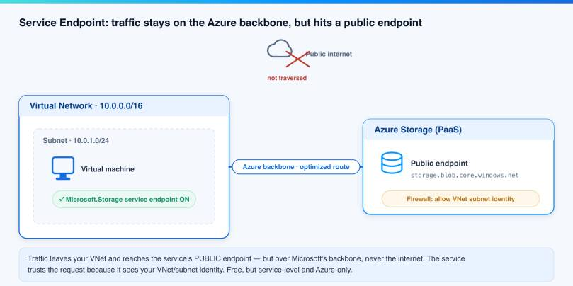
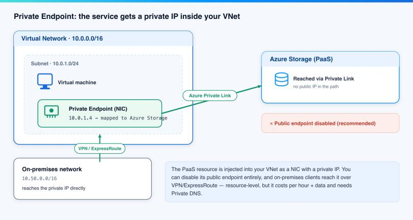
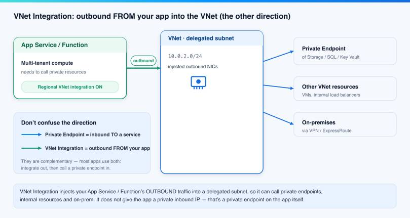
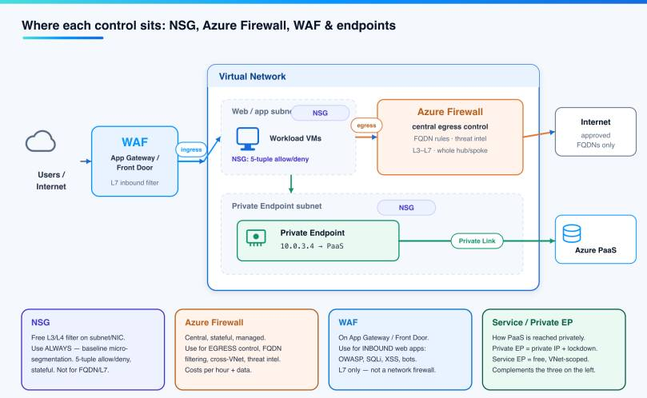
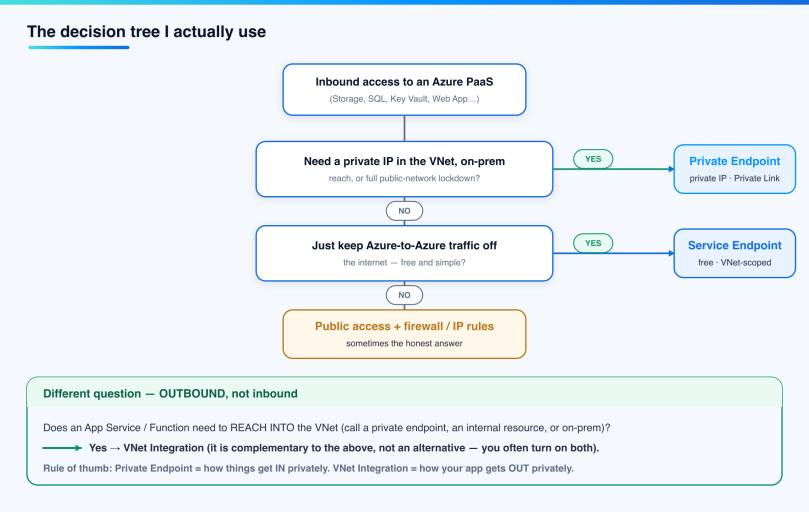

If you secure Azure workloads, you have hit this question more than once: should this storage account, SQL database or Key Vault be reached over a Service Endpoint or a Private Endpoint? The two sound similar, they both “make traffic private”, and the Azure portal happily offers both. But they work in very different ways, and picking the wrong one costs you either money or a security gap.
In this blog post I explain Service Endpoints vs Private Endpoints in plain language. I show what each one really does, where VNet Integration fits (people mix it up with private endpoints all the time), and then I add the part most comparison posts skip: how this connects to NSGs, Azure Firewall and a WAF — and when I reach for each. At the end there is a decision tree I actually use. I tried to keep it simple, with a diagram for every concept.
What problem are we actually solving?
By default, an Azure PaaS service like Azure Storage has a public endpoint. The data plane sits behind a public DNS name and a public IP, protected by your keys, identities and a firewall. That works, but for many companies “the front door is on the public internet” is not good enough — for compliance, for data exfiltration control, or simply because security review says no.
So the goal is the same in all cases: let my virtual network talk to the PaaS service without exposing it to the public internet. That is what the whole Service Endpoints vs Private Endpoints debate is about: both solve this goal, but they solve it at different layers. Let us look at each.
What is a Service Endpoint?
A Service Endpoint is a setting you turn on per subnet, per service type (for example Microsoft.Storage). When it is on, traffic from that subnet to that service type takes an optimized route over the Microsoft backbone instead of the public internet. The service then sees that the request comes from your virtual network, so you can write a firewall rule that says “only allow this VNet/subnet”.

The important detail is in the picture: traffic still goes to the service’s public endpoint. It does not traverse the public internet — it stays on Azure’s backbone — but the destination is still the public IP of the service. Nothing gets a private IP. You are not hiding the service; you are telling the service to trust your VNet identity.
Note: Service Endpoints are free, take two clicks to enable, and are scoped to a virtual network. The trade-off: they are service-level, not resource-level (you trust traffic to a service type, helped by service endpoint policies for finer control), they do not work from on-premises (an on-prem host has no VNet identity), and they only work for the Azure services that support them.
What is a Private Endpoint?
A Private Endpoint is a different idea. It creates a network interface (NIC) with a private IP from your subnet and maps it to one specific PaaS resource through Azure Private Link. From then on, the service answers on a private IP inside your VNet, as if it lived there.

Look at the difference: the storage account now has the address 10.0.1.4 inside my network. I can disable its public endpoint completely, so it is no longer reachable from the internet at all. And because it is just a private IP, on-premises clients can reach it over VPN or ExpressRoute — something a Service Endpoint can never do.
This is the option Microsoft recommends for private access, and it is the one I default to for anything sensitive. The cost: a Private Endpoint is a resource-level object (one per resource, or per sub-resource like blob vs file), it is not free (you pay per hour plus data processed), and it needs Private DNS to work — more on that below.
Service Endpoints vs Private Endpoints: the differences that matter
Here is the Service Endpoints vs Private Endpoints cheat sheet I keep in my head. Keep it light — the two rows that decide most designs are “private IP” and “on-premises”.
| Service Endpoint | Private Endpoint | |
|---|---|---|
| What it does | Optimized route to the public endpoint | Gives the service a private IP in your VNet |
| Gets a private IP? | No | Yes (a NIC in your subnet) |
| Granularity | Service type, per subnet | One specific resource |
| On-premises access | No | Yes (VPN / ExpressRoute) |
| Can disable public access? | No (you filter it) | Yes (fully private) |
| DNS changes needed | None | Yes — Private DNS zone |
| Cost | Free | Per hour + data processed |
| Setup effort | Two clicks | More moving parts |
The short version of Service Endpoints vs Private Endpoints I tell people: a Service Endpoint keeps the door public but only opens it for your VNet. A Private Endpoint moves the door inside your house. If you need real isolation, on-prem reach, or “no public access at all”, you want a Private Endpoint. If you just want free, Azure-to-Azure traffic to stay off the internet, a Service Endpoint is fine.
Where does VNet Integration fit?
People mix this up with the Service Endpoints vs Private Endpoints pair more than anything else, so I gave it its own picture. VNet Integration is the opposite direction. A Private Endpoint is about traffic coming in to a service. VNet Integration is about an Azure compute service — typically an App Service or a Function — sending traffic out into your virtual network.

When you turn on regional VNet Integration, your web app’s outbound calls are injected into a delegated subnet. From there the app can reach private endpoints, internal load balancers, other VNet resources, and on-premises over VPN/ExpressRoute. It does not give the app a private inbound address — if you want the app itself to be private inbound, you put a Private Endpoint on the app.
Hint: the two are complementary, not alternatives. A very common pattern is: my App Service uses VNet Integration to get out, then calls a storage account through its Private Endpoint to get in. Both switches on, one app. Once you see it as “in vs out”, the confusion goes away.
And NSG, Azure Firewall and WAF? When do I use what?
The Service Endpoints vs Private Endpoints choice decides how a service is reached. It does not filter traffic by rules. That is where NSGs, Azure Firewall and a WAF come in. These are not competitors to endpoints — they sit at different layers, and a real design uses several of them together. This picture is the mental model I use.

NSG — the free baseline
A Network Security Group is a free, stateful Layer 3/4 filter you attach to a subnet or a NIC. It allows or denies traffic by the classic five-tuple: source/destination IP, port and protocol. I use NSGs everywhere as the baseline for micro-segmentation — every subnet gets one. They are cheap (free), simple, and they are your first answer to “who can talk to whom inside the VNet”.
What an NSG is not: it does not understand FQDNs, it does not inspect application content, and it is not built for central egress policy across many VNets. For that you go up a layer.
Note: since NSGs can filter on service tags (like Storage or Sql), people sometimes use them to lock down traffic to a service endpoint. That is valid, but it is still 5-tuple/tag filtering — not the deep control a firewall gives you.
Azure Firewall — central egress and FQDN control
Azure Firewall is a managed, stateful, central firewall. I reach for it when I need outbound (egress) control — for example “VMs may only reach these approved FQDNs” — or when I want one policy across a hub-and-spoke network, threat intelligence filtering, and L3–L7 rules in one place. It is the tool for the question “what is my environment allowed to talk to on the internet?”
The trade-off is cost and operations: Azure Firewall is billed per hour plus data processed, and it is a real platform to run. For a small setup, NSGs plus private endpoints often cover you. For an enterprise hub, the firewall earns its keep.
WAF — inbound web protection
A Web Application Firewall lives on Azure Application Gateway or Azure Front Door, and it protects inbound web applications at Layer 7. It blocks the application-layer attacks an NSG and a network firewall never see: SQL injection, cross-site scripting, the OWASP Top 10, bad bots. If you publish a web app, a WAF is how you keep the ugly traffic out.
A WAF is not a network firewall — it does not do general 5-tuple filtering or egress. It is specialised for HTTP/S in front of your apps. You run it together with NSGs and (often) a private backend behind private endpoints.
Here is how I keep them apart in one breath: NSG = free L3/4 baseline everywhere. Azure Firewall = central egress and FQDN control. WAF = inbound web-app protection (L7). Endpoints = how the PaaS service is reached privately. Different jobs, used together.
A short note on DNS — the part that breaks
If a Private Endpoint “does not work”, DNS is the reason nine times out of ten. When you give a service a private IP, the public DNS name must now resolve to that private IP for clients inside the VNet. That is done with a Private DNS zone (for example privatelink.blob.core.windows.net) linked to your VNet, usually wired up automatically when you create the endpoint in the portal.
Hint: if a VM resolves your storage account to a public IP, the Private DNS zone is missing or not linked — not a firewall problem. Service Endpoints, by contrast, need no DNS changes at all, because the name still points at the public endpoint. This DNS overhead is a real part of the Private Endpoint “cost” and worth planning for up front.
What about cost?
Money often makes the Service Endpoints vs Private Endpoints decision. Service Endpoints are free. A Private Endpoint costs roughly \$0.01 per hour (about \$7–8 per endpoint per month) plus data processed, and you pay per endpoint and per sub-resource — that adds up across a large estate. Azure Firewall and WAF add their own per-hour and per-data charges on top. So the honest pattern is: use the free controls (NSG, Service Endpoints) where they are enough, and spend on Private Endpoints, Firewall and WAF where the risk justifies it. Always confirm current numbers on the Azure Private Link pricing page.
The decision tree I actually use
When I design access for a new resource, I run through this Service Endpoints vs Private Endpoints check in my head. It keeps me from over-engineering a dev storage account and from under-protecting a production database.

- Inbound to a PaaS service? If I need a private IP, on-premises reach, or to fully disable public access → Private Endpoint.
- If I just want Azure-to-Azure traffic off the internet, for free, with no DNS work → Service Endpoint.
- Does an App Service or Function need to reach into the VNet (call a private endpoint, an internal resource, on-prem)? → turn on VNet Integration. It is complementary, not an alternative.
- Then layer the filters: NSG as the baseline everywhere, Azure Firewall for central egress, WAF in front of any published web app.
Pitfalls I now avoid
These are the Service Endpoints vs Private Endpoints mistakes I see most often in real environments.
- Treating VNet Integration as a private endpoint. It is outbound from your app, not inbound to a service. Different direction, different switch.
- Forgetting Private DNS. The endpoint is created, the app still hits the public IP, and everyone blames the firewall. Check the Private DNS zone first.
- Leaving the public endpoint enabled. A Private Endpoint does not auto-disable public access. If isolation is the goal, turn the public network access off explicitly.
- Using a WAF as a network firewall (or the reverse). They protect different layers. You usually need both.
- Paying for Private Endpoints on everything. For non-sensitive, Azure-only traffic, a free Service Endpoint plus an NSG is often the right call.
Where this is heading
The clear direction from Microsoft is Private Link and Private Endpoints as the default for private PaaS access, with Service Endpoints staying as the free, simple option for the cases that do not need full isolation. If you are building something new, I would start from “Private Endpoint unless there is a reason not to”, and reserve Service Endpoints for the cheap, Azure-internal paths. Then wrap the whole thing in the right filters — NSG, Firewall, WAF — for the job each one does.
If you want to go deeper, the official docs are good: Azure Virtual Network service endpoints, Azure Private Link and VNet integration for Azure services. And if you like this kind of hands-on breakdown, you will find more on my blog.
I hope this is a little help and makes the Service Endpoints vs Private Endpoints decision easier the next time it lands on your desk.
Stay healthy, Cheers Jannik